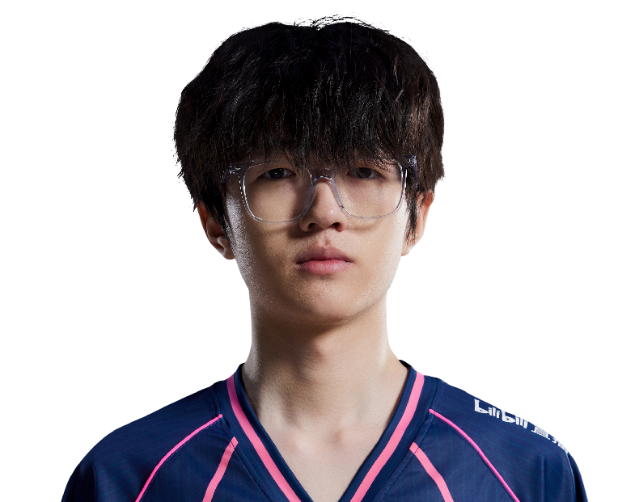

Bilibili Gaming / 卢胤中
Levius.
ALL IN. EVERY ROUND.KilljoyLevius / 卢胤中
Levius / BLG
ONE NAME.EVERY ROUND.ALL IN.
卢胤中，Bilibili Gaming。
从每次选下英雄，到每次站上赛场。
Levius / 赛场影像MOMENTS
MOMENTS
THAT MATTER.
Levius.
Bilibili Gaming
每一瞬间，都是比赛的一部分。
Riot Games / 官方赛场影像
Levius / 职业英雄池
DIFFERENT AGENTS.
SAME PLAYER.
从最熟悉的英雄，看到每一种打法。奇乐
Killjoy.
31% 全英雄使用占比
46职业出场地图
170.4平均战斗评分 ACS
0.84击杀 / 死亡 K:D
593总击杀
22首杀
VLR 全时期职业数据 · 2026-11-02 快照 · 出场单位为地图，使用占比不是胜率。查看原始统计 ↗
Levius / 比赛记录ONE PLAYER.
ONE PLAYER.
EVERY ROUND.
147职业地图
1,923总击杀
0.89全英雄 K/D
Radiant Intl. Invitational D2
BLG / NOVA0 : 1+
Radiant Intl. Invitational D2
BLG / PRX0 : 1+
Radiant Intl. Invitational D1
BLG / G20 : 1+
Radiant Intl. Invitational D1
BLG / GEN0 : 1+
SEM 2025 SF
BLG / EDG0 : 2+
最近已收录系列赛；生涯总计由全英雄表求和，K/D 为总击杀除以总死亡。

下一位 / BLG 阵容